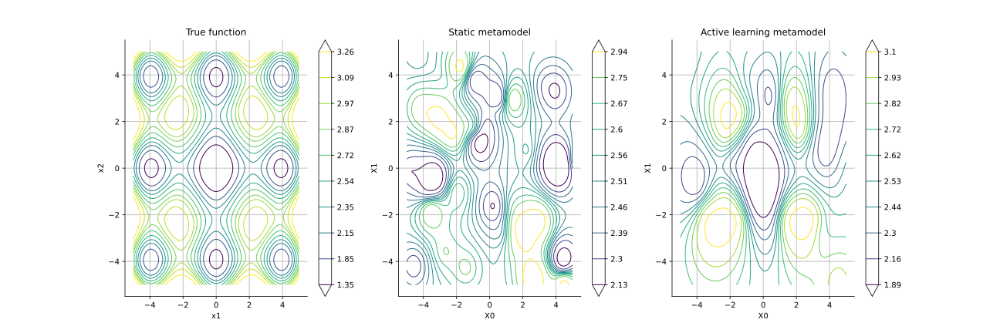
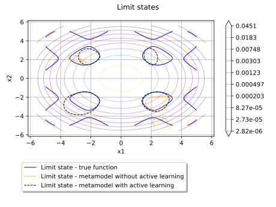
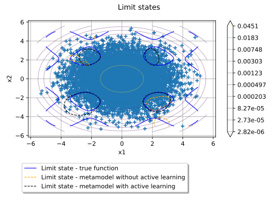

Note
Go to the end to download the full example code.
Analysis of active learning algorithms for reliability estimation¶
The objective is to analyze the behavior of reliability algorithms with and without active learning.
To do so, we propose to set up a probability simulation problem using a modified version of the Ackley function defined in The Ackley test case page.
We consider the input random vector ![\vect{X} = (X_1, X_2)]() which follows the 2-dimensional Normal distribution:
which follows the 2-dimensional Normal distribution:
![\begin{align*}
\vect{X} \sim \mathcal{N}(\mu = [0, 0], \sigma = [1.5,1.5], corr = \mat{I}_2)
\end{align*}]()
We want to evaluate the probability:
![\begin{align*}
p = \mathbb{P} ( g(\vect{X}) \geq 3 )
\end{align*}]()
We use the ProbabilitySimulationAlgorithm using MonteCarloExperiment as the simulation algorithm.
For active learning, this algorithm is combined with ActiveLearningGMMFunction.
We propose to compare the two approaches (without and with active learning) with a global simulation budget of 40 samples.
For the active learning, 20 samples will be used to generate a first Design of Experiments and 20 other samples will be added using active learning.
First, import the python modules:
import openturns as ot
import openturns.experimental as otexp
import openturns.viewer as otv
Create the probabilistic model ![Y = g(\vect{X})]() ¶
¶
Create the input random vector ![\vect{X}]() :
:
input_distribution = ot.Normal([0.0, 0.0], [1.5, 1.5])
X = ot.RandomVector(input_distribution)
input_dimension = input_distribution.getDimension()
Create the function ![g]() as a single symbolic expression:
as a single symbolic expression:
g = ot.SymbolicFunction(
["x1", "x2"],
[
"-20*exp(-0.02*sqrt((x1^2+x2^2)/2))"
"-exp((cos(1.5707963267948966*x1)+cos(1.5707963267948966*x2))/2)"
"+20+2.718281828459045"
],
)
Draw the function to understand the shape of the limit state function:
graph = ot.Graph("Ackley function", "x1", "x2")
graph.setAxes(True)
graph.setGrid(True)
graph.setLegendPosition("upper right")
drawfunction = g.draw(
[-5] * input_dimension, [5] * input_dimension, [100] * input_dimension
)
graph.add(drawfunction)
view = otv.View(graph)

Create the output random vector :
Y = ot.CompositeRandomVector(g, X)
Create the event ![\{ Y = g(\vect{X}) \geq 3 \}]() ¶
¶
threshold = 3.0
event = ot.ThresholdEvent(Y, ot.Greater(), threshold)
Computation of true probability of failure by Monte-Carlo
ot.RandomGenerator.SetSeed(0)
Monte_Carlo_experiment = ot.MonteCarloExperiment()
Monte_Carlo = ot.ProbabilitySimulationAlgorithm(event, Monte_Carlo_experiment)
Monte_Carlo.setMaximumCoefficientOfVariation(0.01)
Monte_Carlo.setMaximumOuterSampling(10000)
Monte_Carlo.setKeepSample(True)
Monte_Carlo.run()
result_Monte_Carlo = Monte_Carlo.getResult()
Display the probability estimate
print(
"Probability estimate true function learning:",
result_Monte_Carlo.getProbabilityEstimate(),
)
Probability estimate true function learning: 0.07379999999999952
Definition of Design of Experiments¶
We generate a Design of Experiments of 40 samples for the simulation algorithm using the overall metamodel and we extract 20 samples for active learning reliability.
lower_bound_DoE = -5.0
upper_bound_DoE = 5.0
number_samples_DoE_complete = 40
distribution_LHS = ot.JointDistribution(
[ot.Uniform(lower_bound_DoE, upper_bound_DoE)] * input_dimension
)
lhs = ot.LHSExperiment(distribution_LHS, number_samples_DoE_complete)
input_DoE_complete = lhs.generate()
output_DoE_complete = g(input_DoE_complete)
indices = ot.Indices(range(0, 20))
input_DoE_reduced = input_DoE_complete.select(indices)
output_DoE_reduced = output_DoE_complete.select(indices)
Monte-Carlo simulation and static metamodel¶
Creation of Gaussian Process Regressor
basis = ot.ConstantBasisFactory(input_dimension).build()
covariance_model = ot.MaternModel(input_dimension)
fitter_algo = ot.GaussianProcessFitter(
input_DoE_complete, output_DoE_complete, covariance_model, basis
)
fitter_algo.run()
fitter_result = fitter_algo.getResult()
gpr_algo = ot.GaussianProcessRegression(fitter_result)
gpr_algo.run()
gpr_result = gpr_algo.getResult()
gprMetamodel = gpr_result.getMetaModel()
Y_metamodel = ot.CompositeRandomVector(gprMetamodel, X)
Setting the reliability problem
event_metamodel = ot.ThresholdEvent(Y_metamodel, ot.Greater(), threshold)
Run of Monte-Carlo algorithm on the metamodel
ot.RandomGenerator.SetSeed(0)
Monte_Carlo_metamodel = ot.ProbabilitySimulationAlgorithm(
event_metamodel, Monte_Carlo_experiment
)
Monte_Carlo_metamodel.setMaximumCoefficientOfVariation(0.01)
Monte_Carlo_metamodel.setMaximumOuterSampling(10000)
Monte_Carlo_metamodel.run()
result_Monte_Carlo_metamodel = Monte_Carlo_metamodel.getResult()
Display the probability estimate
print(
"Probability estimate without learning:",
result_Monte_Carlo_metamodel.getProbabilityEstimate(),
)
Probability estimate without learning: 0.0111
Monte-Carlo simulation and active learning¶
Now, we use the ActiveLearningReliabilityAlgorithm on the same reliability problem.
Definition of active learning function. Here, we choose the “GMM” function of [lacaze2014].
active_learning_convergence_threshold = 1e-10
gmm_output_quantile = 0.1
gmm_function = otexp.ActiveLearningGMMFunction(
threshold,
active_learning_convergence_threshold,
input_distribution,
gmm_output_quantile,
)
Definition of the Gaussian process fitter on the reduced DoE: it carries the initial design, the covariance model and the trend basis used by the active learning algorithm
covariance_model = ot.MaternModel(input_dimension)
fitter_algo_reduced = ot.GaussianProcessFitter(
input_DoE_reduced, output_DoE_reduced, covariance_model, basis
)
Now, we can build the active learning algorithm. We define the maximal number of exact limit state function evaluations to 20.
Monte_Carlo_active_learning = ot.ProbabilitySimulationAlgorithm(
event, Monte_Carlo_experiment
)
Monte_Carlo_active_learning.setMaximumCoefficientOfVariation(0.01)
Monte_Carlo_active_learning.setMaximumOuterSampling(10000)
simulation_budget = 20
ot.RandomGenerator.SetSeed(0)
active_learning_MonteCarlo = otexp.ActiveLearningReliabilityAlgorithm(
fitter_algo_reduced, Monte_Carlo_active_learning, gmm_function
)
active_learning_MonteCarlo.setMaximumIterations(simulation_budget)
convergence_criterion = active_learning_MonteCarlo.ACTIVE_LEARNING
active_learning_MonteCarlo.setConvergenceCriterion(convergence_criterion)
Now, we can run the algorithm and get results
Probability estimate
print(
"Probability estimate with active learning:",
results_active_MonteCarlo.getProbabilityEstimate(),
)
Probability estimate with active learning: 0.06490000000000003
As we can see, the value of the probabilities are very different. To understand the behavior of the algorithms, we can plot the shape of the metamodel.
drawfunction.setTitle("True function")
drawfunction_static_metamodel = gprMetamodel.draw(
[-5] * input_dimension, [5] * input_dimension, [100] * input_dimension
)
drawfunction_static_metamodel.setTitle("Static metamodel")
drawfunction_active_metamodel = metamodel_active_learning.draw(
[-5] * input_dimension, [5] * input_dimension, [100] * input_dimension
)
drawfunction_active_metamodel.setTitle("Active learning metamodel")
grid = ot.GridLayout(1, 3)
grid.setGraph(0, 0, drawfunction)
grid.setGraph(0, 1, drawfunction_static_metamodel)
grid.setGraph(0, 2, drawfunction_active_metamodel)
_ = otv.View(grid)

Even if the metamodel by active learning does not fit well the function elsewhere, we can plot the limit state approximated by the metamodel and compare with true function. On this graph, we can see that the metamodel refined by active learning is much more precise than the static one in the vicinity of the limit state. This graph also shows the PDF of the input variables.
graph = ot.Graph("Limit states", "x1", "x2")
g_IsoLines = g.draw(
[-5] * input_dimension, [5] * input_dimension, [128] * input_dimension
)
dr = g_IsoLines.getDrawable(0)
dr.setLevels([threshold])
dr.setLegend("Limit state - true function")
dr.setColor("blue")
dr.setLineWidth(1)
metamodel_initial_IsoLines = gprMetamodel.draw(
[-5] * input_dimension, [5] * input_dimension, [128] * input_dimension
)
dr_metamodel_initial = metamodel_initial_IsoLines.getDrawable(0)
dr_metamodel_initial.setLevels([threshold])
dr_metamodel_initial.setLineStyle("dashed")
dr_metamodel_initial.setLegend("Limit state - metamodel without active learning")
dr_metamodel_initial.setColor("orange")
dr_metamodel_initial.setLineWidth(1)
metamodel_active_IsoLines = metamodel_active_learning.draw(
[-5] * input_dimension, [5] * input_dimension, [128] * input_dimension
)
dr_metamodel_active = metamodel_active_IsoLines.getDrawable(0)
dr_metamodel_active.setLevels([threshold])
dr_metamodel_active.setLineStyle("dashed")
dr_metamodel_active.setLegend("Limit state - metamodel with active learning")
dr_metamodel_active.setColor("black")
dr_metamodel_active.setLineWidth(1)
graph.add(dr)
graph.add(dr_metamodel_initial)
graph.add(dr_metamodel_active)
draw_pdf = input_distribution.drawPDF()
contour_pdf = draw_pdf.getDrawable(0).getImplementation()
contour_pdf.setAlpha(0.3)
graph.add(contour_pdf)
graph.setLegendCorner([-0.05, -0.2])
graph.setLegendPosition("upper left")
_ = otv.View(graph)

We can also visualize the input samples generated by the Monte-Carlo algorithm.
graph = ot.Graph("Limit states", "x1", "x2")
cloud = ot.Cloud(Monte_Carlo.getInputSample())
graph.add(cloud)
graph.add(dr)
graph.add(dr_metamodel_initial)
graph.add(dr_metamodel_active)
graph.add(contour_pdf)
graph.setLegendCorner([-0.05, -0.2])
graph.setLegendPosition("upper left")
_ = otv.View(graph)
